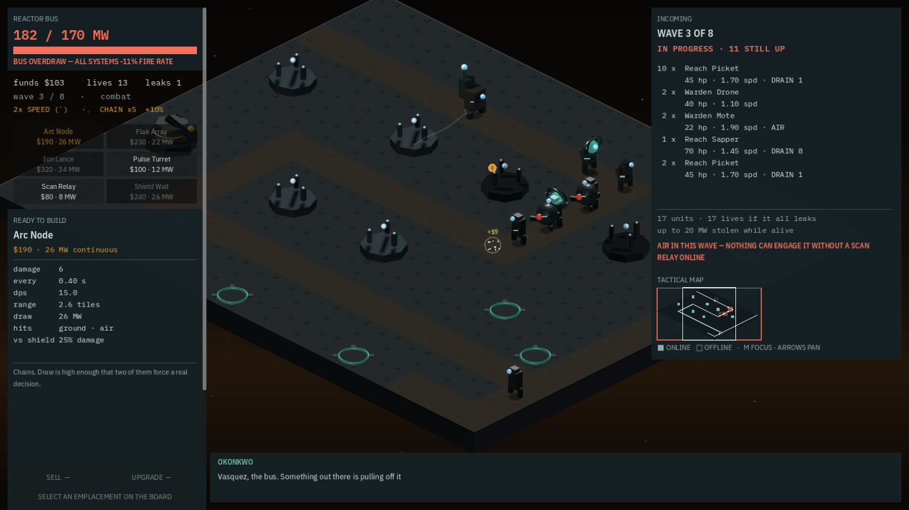

What the player can do now that they could not this morning
Three changes, each closing a gap between what the game could already do internally and what a person sitting at the keyboard could actually reach: a tactical map for a board too big to see all at once, a way to give the board back at maximum interface scale, and a campaign system that had existed for two sessions without ever once being reachable by playing.
Three changes this session, each closing a gap between what the game could already do internally and what a person sitting at the keyboard could actually reach.
A tactical map, because the board stopped fitting on the screen
With lanes now able to number up to five and boards heading past 48x48, a single screen reading lane pressure stopped being enough. The minimap draws the board's own silhouette, every lane's route, a threat wash bucketed by how much a leaking unit actually costs rather than by raw unit count — because one heavy unit is not worth the same life as one light one — plus emplacement marks, unit dots, and the camera's own viewing rectangle. Online and offline emplacements are shape-coded rather than colour-coded, filled against hollow, verified by converting a real capture to greyscale and confirming the distinction still reads clearly with colour removed entirely.


Hiding the panels costs information, never the ability to act
At 200% interface scale the two instrument panels do not crowd anchor-24's board, they erase all but four pixels of it. A hide toggle was built rather than a responsive layout, because narrowing the panels cannot fix a four-pixel strip, and because a toggle is the kind of thing a player deliberately reaches for, where a width-based layout would need no input action at all. Every verb a player has — build, sell, upgrade, targeting, tower cycling, all three abilities — was traced and confirmed to route from board input straight into the simulation, never through a HUD widget, so hiding the panels was confirmed to cost only readouts: bus load, funds, lives, the datasheet, ability charge, incoming composition. One hint chip stays on screen while everything else is hidden, because the way back must never be the thing that disappears with it.
Winning an anchor finally takes you to the draft
The recovery draft between anchors — pick one of three permanent campaign bonuses, the other two lost to the level just cleared — has existed in the data and the schema for two sessions and had never once been reachable by actually playing the game. The win handler skipped straight to reloading the next anchor. It now goes to the draft screen instead, without touching which anchor was selected, so the draft grades the anchor just won and its button reads DEBRIEF rather than NEXT.


Proving the fix end to end surfaced one real engine trap along the way: a global flag this project uses to pause frame capture during a screenshot is engine-wide state, not scoped to one scene, so a scene transition happening mid-capture left the next scene's own capture waiting forever for a frame that had already been told not to render. That is now a known trap rather than a mystery the next capture-during-transition would have hit cold.
Commits
f03b93bfeat(ui): give the board back — a hide-panels toggle, and one warning silenceda15c269feat(ui): a tactical map, because the board stopped fitting on the screene0b7a56feat(game): winning an anchor takes you to the draft, and the draft talks back